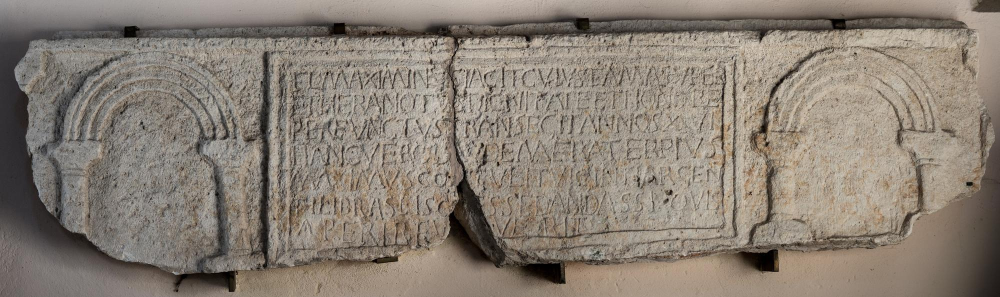

The Inscription of Maximinus
PHYSICAL DESCRIPTION
- Type
- Frontal panel of the sarcophagus.
- Material(s)
- Limestone.
- Execution
- Inscribed.
- Dimensions
- 50 × 104 cm
- Epigraphic Field
- × cm
- Letters Height
- 3-4 cm
Palaeographic comment

INSCRIPTION
INTERPRETATIVE TRANSCRIPTION
Fl(avius) Maximinus iacit (!), cuius fama super
ethera (!); notus dignitate et honore
perfunctus transegit annos XLVI;
hanc vero de suo em<it>; f̣rater pius
Maximus
co[n]tulit. Viginti argen
=
ti libras fiscọ ẹsse dandas, si quis
aperire v[ol]uerit.
APPARATUS CRITICUS
4. VERE, Lettich 1983
EMERATER, Bertolini 1892, Lettich 1983; EMERAT <FRAT>ER,
CLE 621,
ILCV 822; EMERAT E⸢T⸣, .
5. COVEIT, Bertolini 1892; CO[N]VE<N>IT,
CLE 621,
ILCV 822; CONSTITVIT, Lettich 1983
.
7. VERIT, Bertolini 1892; [VOL]VERIT,
CLE 621,
ILCV 822
.
TRANSLATION
PEOPLE
Flavius Maximinus
- NOMEN
- Flavius
- COGNOMEN
- Maximinus
- GENS
- Flavia
- ORIGIN (of the name Maximinus)
- latin
- GENDER
- male
- OCCUPATION
- functionary
- RANK
- unknown
- ROLE
- dedicator/deceased
- RELATIONSHIP
- brother? (→ Maximus)
Maximus
- COGNOMEN
- Maximus
- GENS
- Flavia?
- ORIGIN (of the name Maximus)
- latin
- GENDER
- male
- OCCUPATION
- civilian?
- ROLE
- dedicator (completion)
- RELATIONSHIP
- brother? (→ Flavius Maximinus)
Bibliography
| Bertolini 1892, 4-5. |
| Bertolini 1892, 336. |
| CLE 621 |
| ILCV 822 |
| Lettich 1983, 51-52, n. 8. |
- EDR
-
EDR098071
- Author of the record:
- Damiana Baldassarra
- Date:
- 19-10-2007
COMMENTARY
Line 5 reads CO[N]TVLIT. The reading rests on Bertolini, who nevertheless arrived at it in two stages. In his first notice (Bertolini 1892, 4-5), written while the sarcophagus was still partly buried and with letters he himself describes as shallowly cut, partly spoilt by weathering and therefore hard to read, he printed CO//VEIT, declared that two or three letters were missing in the middle of the verb and that he could not complete it, and observed that it governed the esse dandas of the following line. On that basis Bücheler (CLE 621) completed the sequence as co[n]ue(n)it, and Diehl (ILCV 822) followed him. Bertolini, however, returned to the stone once the tomb had been raised above ground and corrected himself (Bertolini 1892, 336): «in luogo del CO VEIT, si legge CO NTVLIT, la qual parola, se non risponde adeguatamente alla formula della minacciata punizione, ha almeno il vantaggio del facile supplemento non mancando che d'una parte del N». The conjecture of the two corpora therefore rests on a reading that their sole autoptic source had already withdrawn, and which they presumably did not know, having consulted only pp. 4-5 of the Notizie. The correction was available to Lettich, who does print contulit (Lettich 1983, 52) and rejects Diehl's proposal; he does not observe, however, that it derived from a superseded reading, and the origin of the misunderstanding appears never to have been brought to light.
In line 4 the stone presents a continuous sequence of eight letters which earlier editors transcribe as EMERATER. Bertolini (Bertolini 1892, 4-5) declares it secure and suggests that the cutter may inadvertently have omitted a T, without saying where; Bücheler and Diehl resolve it as emerat (frat)er, positing the loss of four consecutive letters. That solution is bound up with the reading convenit: once the verb of line 5 comes to govern the infinitive clause, pius Maximus is left without a predicate and must become the subject of emerat, which in turn forces ER to be taken as a noun in apposition. With contulit restored, that syntactic necessity disappears, since each of the two men has a verb of his own.
The present edition divides em<it> and <f>rater, assuming the loss of the final two letters of emit and the reading F for the third letter. The solution is not certain and is marked as such in the text, but it is the least costly of those on offer: it commits three letters against Bücheler's four, requires no intervention in line 5, and assigns to each verb the object standing beside it. It thus avoids both the sense "to establish" which Lettich is obliged to attribute to confero (Lettich 1983, 52), while himself acknowledging that it is nowhere attested, and the redundancy that would follow from having emerat and contulit share one subject. The accusative and infinitive of line 6 needs no expressed governing verb, since the ellipse of a verb of will or of declaration is ordinary in prescriptive clauses. Against this it must be recorded that the loss of -it sits oddly in a text that nowhere else abbreviates or truncates, and that writes viginti in full where space might have been saved. The division emerat e<t>, with pluperfect and conjunction, remains open and is recorded in the apparatus: it costs a single letter but presupposes a confusion of R and T for which there is no palaeographic warrant.
The reading of the third letter as F rests on a matter of form. In the script of this period F tends to develop its lower stroke until it descends to the base line, producing an anomalous third arm that brings it close to E; in the letter in question the lower arm is shorter than the upper one, which suits an F of this kind better than an E, whose arms tend to be of equal length. The observation is made on a worn surface and cannot be called decisive: examination under raking light, and above all a metrical comparison between the arms of the secure F's of this text — in Fl(avius), fama, perfunctus, fisco — and those of the E's, should establish in which of the two sets the contested letter falls. Against this reading stands Bertolini's declaration that the sequence EMERATER is secure; that declaration, however, belongs to the same inspection which he afterwards had to correct in line 5, and there is no indication that line 4 was re-examined when the sarcophagus was raised above ground.
If the reading is right, Maximus is the brother of the deceased, and the pair of names agrees with it: Maximus and Maximinus are two distinct cognomina built on the same stem, and derivative naming within a family is current practice in the fourth century. The argument must be taken for what it is, since maxim- is among the most productive stems in Latin onomastics and the co-occurrence of the two names is consistent with kinship without proving it. A closer parallel comes from the necropolis itself: in the inscription of Flavius Sauma the sarcophagus is procured by his brother Viax, arcam illi emerunt: frater Viax et Evingus. Three features of our text recur there: the kinship term placed before the name, the verb emere for the purchase of the sarcophagus, and the omission of the gentilicium with the brother, which is probably not repeated because it is identical with that of the deceased. The distribution of roles differs, since there it is the brother who buys whereas here the purchase is the deceased's and the contulit falls to the brother; but the formular pattern is the same, and it makes the restoration of frater less conjectural than a bare count of letters would suggest.
In its content the text is the most elevated in the whole necropolis. The hemistich fama super aethera notus reproduces Verg. Aen. I 379 verbatim, where Aeneas presents himself to Venus; the quotation was identified by Bücheler and taken up by Diehl, who refers to v. 378 and thus also to the sum pius Aeneas that precedes it, and who further notes in dignitate et honore a pairing of Ciceronian and Caesarian ancestry. The borrowing raises a question of punctuation: Bücheler and Diehl place the comma after notus, keeping it within the hemistich, where the adjective remains masculine because it was so in Virgil and therefore does not agree with fama. Here it has been detached and made to govern the ablatives that follow, notus dignitate et honore, so yielding agreement with Maximinus; the same ablatives then also serve perfunctus, which is left with a complement. The choice reduces the borrowing to three words, which remain unmistakable, and is recorded here as a divergence from the printed editions.
The status of the deceased is not stated, but several indications converge on an official, municipal or imperial, rather than on a soldier; Lettich suggests that he may even have been a curialis (Lettich 1983, 52). The expression dignitate et honore perfunctus belongs to the vocabulary of civic careers, in which the honores are the magistracies and the dignitas the rank attained, and it accords with the literary culture the text displays. To this is added an argument ex silentio which carries weight in this necropolis: both the unit and the rank are missing. In the inscriptions of the soldiers of the cemetery the one and the other are normally stated, often together — de numero equitum Bracchiatorum and biarcus for Flavius Sauma, tribunus militum Ioviorum Iuniorum for Flavius Marcaridus — and the presence of at least one of the two is all but regular. Here neither appears, and that in a text by no means reticent about the career of the deceased, to which it devotes a whole clause: the omission cannot therefore be explained by economy of space. Finally, both men bear Latin cognomina, whereas Germanic and otherwise non-Latin onomastics are widely represented in the cemetery; the datum proves nothing in itself, but it falls in with the others in setting this burial apart from the military milieu that characterises the necropolis.